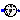
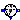
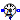
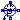

This package contains potential, voltage, and current sensors. The sensors can be used to convert voltages or currents into real signal values o be connected to components of the Blocks package. The sensors are designed in such a way that they do not influence the electrical behavior.
Extends from Modelica.Icons.SensorsPackage (Icon for packages containing sensors).| Name | Description |
|---|---|
|  PotentialSensor | Sensor to measure the potential |
|  VoltageSensor | Sensor to measure the voltage between two pins |
|  CurrentSensor | Sensor to measure the current in a branch |
|  PowerSensor | Sensor to measure the power |
The potential sensor converts the voltage of a node (with respect to the ground node) into a real valued signal. It does not influence the current sum at the node which voltage is measured, therefore, the electrical behavior is not influenced by the sensor.
Extends from Modelica.Icons.RotationalSensor (Icon representing a round measurement device).
| Name | Description |
|---|---|
| p | pin to be measured |
| phi | Absolute voltage potential as output signal [V] |
The voltage sensor converts the voltage between the two connectors into a real valued signal. It does not influence the current sum at the nodes in between the voltage is measured, therefore, the electrical behavior is not influenced by the sensor.
Extends from Modelica.Icons.RotationalSensor (Icon representing a round measurement device).
| Name | Description |
|---|---|
| p | positive pin |
| n | negative pin |
| v | Voltage between pin p and n (= p.v - n.v) as output signal [V] |
The current sensor converts the current flowing between the two connectors into a real valued signal. The two connectors are in the sensor connected like a short cut. The sensor has to be placed within an electrical connection in series. It does not influence the current sum at the connected nodes. Therefore, the electrical behavior is not influenced by the sensor.
Extends from Modelica.Icons.RotationalSensor (Icon representing a round measurement device).
| Name | Description |
|---|---|
| p | positive pin |
| n | negative pin |
| i | Current in the branch from p to n as output signal [A] |
This power sensor measures instantaneous electrical power of a singlephase system and has a separated voltage and current path. The pins of the voltage path are pv and nv, the pins of the current path are pc and nc. The internal resistance of the current path is zero, the internal resistance of the voltage path is infinite.
Extends from Modelica.Icons.RotationalSensor (Icon representing a round measurement device).
| Name | Description |
|---|---|
| pc | Positive pin, current path |
| nc | Negative pin, current path |
| pv | Positive pin, voltage path |
| nv | Negative pin, voltage path |
| power | Instantaneous power as output signal [W] |